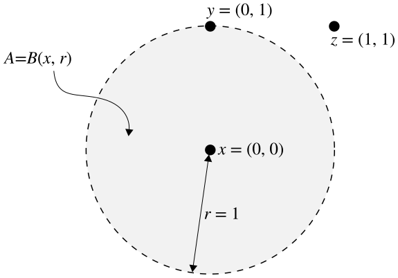
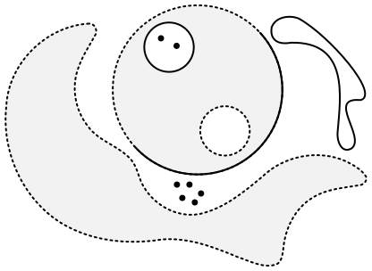

Limit Points, Closure, Boundary and Interior
It's fairly common to think of open sets as sets which do not contain their boundary, and closed sets as sets which do contain their boundary. The trouble here lies in defining the word 'boundary.'
Contents
We are nearly ready to begin making some distinctions between different topological spaces. Distinguishing between fundamentally different spaces lies at the heart of the subject of topology, and it will occupy much of our time. However, before we can really dig in, we're going to need some additional tools.
On a different note, and I've been meaning to mention this, I'd be willing to bet that you probably had a different sense of what open and closed sets were before learning any topology. It's fairly common to think of open sets as sets which do not contain their boundary, and closed sets as sets which do contain their boundary. The trouble here lies in defining the word 'boundary.' This is finally about to be addressed, first in the context of metric spaces because it is easier to see why the definitions are natural there. As in prior posts, these concepts generalize easily to topological space.
Limit Points
If you've had any calculus, you've probably had some experience with limits. Whether or not the formal $\epsilon$-$\delta$ definition of a limit is familiar to you is of no real consequence. Even though this definition is extremely insightful, it isn't really necessary for our purposes. In fact, if we aren't working in a metric space then this definition doesn't even apply. The good news it that many definitions in topology have a sort of too-good-to-be-true feel to them, since they're often deceptively simple.
Limit points are not the same type of limit that you encounter in a calculus or analysis class, but the underlying idea is similar. Informally, a point in a metric space is a limit point of some subset if it is arbitrarily close to other points in that subset. What exactly does this mean? It means that no matter how closely we zoom in on a limit point, there will always be another point in its immediate vicinity which belongs to the subset in question. Thus, we can in some sense approximate limit points to arbitrary accuracy using other points in the subset. This might be a little confusing or overwhelming, so I'll give you the definition now and you'll see that it isn't too bad. Its simplicity may even be a bit misleading.
Definition. Let $A$ denote a subset of a metric space $X$. A point $p\in X$ is a limit point of $A$ if every open ball centered at $p$ contains a point $x\in A$ with $x\neq p$. We write $L(A)$ to denote the set of limit points of $A$.
The first thing that I will emphasize is that a limit point of a set does not need to belong to that set! All that is necessary is that there are points in the set as close as we like to the limit point. This can be made more obvious by rephrasing the definition slightly. By "every open ball," what we mean is that for every real number $\epsilon>0$ there exists some point $x\in A$ distinct from $p$ such that $x\in B(p,\epsilon)$. Take a moment to appreciate and understand that this definition ensures what I claim it does.
There's a sort of dual notion as well, which is called an isolated point. The following definition makes it clear that any point in a subset of a metric space is either a limit point or an isolated point.
Definition. Let $A$ denote a subset of a metric space $X$. A point $p\in X$ is an isolated point of $A$ if there exists an open ball centered at $p$ which contains no other points of $A$.
Let's look at an example, to make sure we're fully on board with these concepts before we press onward. I'm going to cordon off the entire example so that we don't accidentally make sweeping generalizations about every metric space based on this one scenario.
Example. Take $X=\mathbb{R}^2$ equipped, of course, with the standard metric $d:X\times X\to\mathbb{R}$. Let $A=B\big((0,0),1\big)$, the open unit ball centered at the origin. Consider the following points in $X$:
$$\begin{align}
x &= (0,0), \\
y &= (1,0), \\
z &= (1,1). \\
\end{align}$$I'll even throw in a diagram to make things crystal clear:

Clearly $x\in A$ because $d(x,x)=0< r$. However, $y,z\notin A$ because $d(x,y)=r$ and $d(x,z)=\sqrt{2}>r$. Which, if any, of the points $x,y,z$ are limit points of $A$?
Let's consider $x$ first. Does every open ball centered at $x$ contain a point in $A$ distinct from $x$? The simple answer is "well DUH," but let's be a tad more rigorous.
Choose a real number $\epsilon>0$. We consider separately the cases where $\epsilon\geq 1$ and $0<\epsilon<1$. If $\epsilon\geq 1$ then $A\subseteq B(x,\epsilon)$ and we are done because there are certainly points in $A$ distinct from $x$. If $0<\epsilon<1$, it is clear that the point $x_0=(0,\epsilon/2)\in B(x,\epsilon)$. Furthermore, $x_0\neq x$ because $d(x,x_0)>0$.
So $x$ is a limit point of $A$, which was sort of obvious from the start. A similar argument could be made that any point $a\in A$ is a limit point of $A$ by adding a few more technical details to the above argument, but I won't bother because it feels like overkill.
Next, let's take a look at $y$. You should have a sense that $y$ is a limit point of $A$, because even though it is not in $A$ it is superextraclose to lots and lots of points in $A$. Let's show that our intuition is correct.
Again, choose a real number $\epsilon>0$ and consider the open ball $B(y,\epsilon)$. The point $y_0=(0,1-\epsilon/2)$ is clearly in $B(y,\epsilon)$ because $d(y,y_0)=\epsilon/2<\epsilon$ and thus it is also distinct from $y$. Furthermore, $y_0\in A$ since $d(x,y_0)=1-\epsilon/2<1$.
We've shown then that $y$ is a limit point of $A$, which is somewhat more interesting. A similar argument would show that any point $a\in X$ with $d(a,x)=1$ is a limit point of $A$. Sooo... even though we haven't defined the concept of "boundary" yet, it's looking like any point on what we intuitively perceive to be the boundary of $A$ is a limit point of $A$. This is an important realization.
Finally, let's show that $z$ is not a limit point of $A$. To show that the necessary property is not true for every open ball centered at $z$, all we need to do is demonstrate a single open ball centered at $z$ which contains no points of $A$. This is easy! Just take as the radius any positive $\epsilon<\sqrt{2}-1$ and that's essentially all there is to it.
More formally, choose $\epsilon<\sqrt{2}-1$ and consider $z_0\in B(z,\epsilon)$. By the definition of this open ball $d(z,z_0)<\epsilon$. By the triangle inequality,
$$\begin{align}
d(x,z) &= \sqrt{2} \\
&\leq d(x,z_0) + d(z_0,z) \\
&< d(x,z_0) + \epsilon \\
&< d(x,z_0)+\sqrt{2}-1.
\end{align}$$Rearranging the above inequality, we have that $d(x,z_0)>1$ and so $z_0\notin A$. Thus, $z$ is not a limit point of $A$. Once again, a similar argument would show that, in general, any point $p\in X$ with $d(p,x)>1$ is not a limit point of $A$.
What can we conclude about this particular set $A$? The limit points of $A$ are every point in $A$ as well as every point on the unit circle $S^1$. That is, $L(A)=A\cup S^1=\overline{B}(x,r)$. This is the closed ball with the same center and radius as $A$.
We shall see soon enough that this is no accident. For any subset $A$ of a metric space $X$, it happens that the set of limit points $L(A)$ is closed. Let's prove something even better.
Theorem. A subset of a metric space is closed if and only if it contains all of its limit points.
Proof. We argue first that if $L(A)\subseteq A$ then $A$ is closed. It suffices to show that $X-A$ is open. Choose a point $x\in X-A$. Clearly $x$ is not a limit point of $A$ since $x\notin A$ and thus $x\notin L(A)\subseteq A$. Thus there exists some open ball $B$ centered at $x$ which does not contain any points in $A$. It follows that $B\subseteq X-A$ and so $X-A$ is open.
We argue next that if $A$ is closed then $L(A)\subseteq A$. Since $A$ is closed, we know that $X-A$ is open. Thus for any $x\in X-A$ there exists some open ball centered at $x$ which is strictly contained in $X-A$ and therefore contains no points of $A$. It follows that $x$ is not a limit point of $A$, so any limit points of $A$ are contained in $A$.
Hooray! We now have an alternative, and often easier to use, definition of a closed set in a metric space! What's awesome is that nothing we've done (other than our example) depends on the metric, so we can immediately abstract everything to the setting of topological spaces!
Definition. Let $A$ denote a subset of a topological space $X$. A point $p\in X$ is a limit point of $A$ if every neighborhood of $p$ contains a point $x\in A$ with $x\neq p$.
The theorem we just proved translates as well, if we simply replace open balls with neighborhoods each time the appear in the proof.
As always, there's nothing contradictory about the fact that the empty set is closed. Certainly the empty set contains all of its limit points, since it contains no points at all.
Closure
We will now define the closure of a subset of a topological space. We will see later that taking the closure of a set is equivalent to include the set's boundary.
Definition. Let $A$ denote a subset of a topological space $X$. The closure of $A$ is the intersection of all closed set in $X$ which contain $A$. We denote the closure of a $A$ by $\overline A$.
The closure of a set is always closed, because it is the intersection of closed sets. Furthermore, it is obvious that any closed set must equal its own closure. Intuitively, $\overline A$ is the smallest closed set which contains $A$. This is because, by definition, any closed set containing $A$ must also contain $\overline A$. Even more intuitively, the closure of $A$ is the union of $A$ with all of its limit points. Let's prove that this is true.
Theorem. If $A$ is a subset of a topological space, then $\overline A=A\cup L(A)$.
Proof. We argue first that $A\cup L(A)\subseteq\overline A$. Clearly $A\subseteq\overline A$ since $\overline A$ is the intersection of all closed sets containing $A$, and thus itself contains $A$. It remains to show then that $L(A)\subseteq\overline A$, which we do by contraposition. Suppose $x\notin\overline A$ so that $x\in X-\overline A$. Since $\overline A$ is closed, $X-\overline A$ is open and is thus a neighborhood of $x$ which contains no points in $A$. Thus $x\notin L(A)$.
We argue next that $\overline A\subseteq A\cup L(A)$. If $x\in A$ then the proof is immediate. If $x\in\overline A -A$, then by definition $x$ is in every closed set containing $A$. It follows that for any open set $U\subseteq X-A$, we have $x\notin U$. Thus any neighborhood of $x$ intersects $A$ in some point $p$. Since $x\notin A$, clearly $x\neq p$ and thus $x$ is a limit point of $A$.
It's a somewhat gross proof, but a nice and useful result, and one that we will use often.
Boundary
Next let's formalize the concept of boundary. It's easy and intuitive to think about the boundary of a ball, so let's start there. Let's say we have an open and closed ball of the same center and radius in some metric space. They obviously have the same boundary — the circle with the same radius as these balls. Even though these points don't belong to the open ball, they are just touching its outer edge.
Now what about this set, as a subset of $\mathbb{R}^2$ in the standard metric?

Trying to calculate the boundary of this set is a bit more difficult than just drawing a circle. Does that loop at the top right count as boundary? What about the points sitting by themselves? Do those inner circles count as well, or does the boundary have to enclose the set? It turns out that, the way we define boundary, the answer to all of these questions is yes.
Definition. Let $A$ be a subset of a metric space $X$. A point $p\in X$ is a boundary point of $A$ if every open ball centered at $p$ contains at least one point in $A$ and one point in $X-A$.
Definition. The boundary of $A$ is the set of all boundary points of $A$. We denote it by $\partial A$.
This makes a lot of sense! No matter how tiny an open ball we choose around a boundary point, it will always intersect both $A$ and its complement. That is, it will always contain points that are in $A$ and points that are not in $A$.
These definitions are identical in a topological space if we again replace open balls with neighborhoods. I won't even bother restating them.
It turns out we could already have defined the boundary of a set without the notion of boundary points!
Theorem. If $A$ is a subset of a topological space $X$, then $\partial A=\overline A\cap\overline{X-A}$.
Proof. Choose $x\in\partial A$. By definition, every neighborhood of $x$ contains a point in $A$ and a point in $X-A$, so $x\in\overline A$ and $x\in\overline{X-A}$. Thus $x\in\overline A\cap\overline{X-A}$ and so $\partial A\subseteq \overline A\cap\overline{X-A}$.
The proof that $\overline A\cap\overline{X-A}\subseteq\partial A$ is precisely the same as above, with the steps reversed.
This means that the boundary of $A$ is the intersection of the smallest closed set containing $A$ and the smallest closed set containing its complement, which hopefully seems reasonable to you.
Interior
I'm not going to bother with metric spaces for this part, since I think you get the idea. You can easily translate all the results about topological spaces back into metric spaces if you'd like. Intuitively, we can think of the interior of a set as everything in the set which does not belong to its boundary. This is actually not the definition we'll initially give, although we shall soon see that they are equivalent.
Definition. Let $A$ denote a subset of a topological space $X$. The interior of $A$ is the union of all open subsets of $A$. We write $\mathring A$ to denote the interior of $A$.
Clearly the interior of a set is always open because it is the union of open sets. We can think of the interior of a set as the largest open set contained in that set. Clearly every point in $\mathring A$ has a neighborhood contained in $A$. We call each such point an interior point of $A$.
Now that we have defined the interior and closure of any set $A$, we have a sort of set sandwich $\mathring A\subseteq A\subseteq\overline A$. Here, $\mathring A$ contains none of its boundary points, $\overline A$ contains them all, and $A$ can contain some, all or none.
Let's finish up with the proof I promised you a minute ago.
Theorem. If $A$ is a subset of a topological space $X$, then $\mathring A=\overline A-\partial A$.
Proof. Choose $x\in\mathring A$. Clearly $x\in\overline A$ because $\mathring A\subseteq\overline A$. Since $x$ is an interior point of $A$, there exists some neighborhood of $x$ which is contained in $A$. Thus $x$ is not a boundary point of $A$ and so $x\in\overline A-\partial A$.
Next, choose $x\in\overline A-\partial A$. Then $x\in A$ or $x$ is a limit point of $A$, but $x$ is not a boundary point of $A$. Thus any neighborhood of $x$ contains a point in $A$ but no points in $X-A$, so $x\in\mathring A$.
I'm probably boring you. I'm boring myself, actually, because I don't find any of this particularly interest. It's kind of necessary though, so I'm glad I went through it. I'm going to end the post here, and next time I'll finally talk about continuity, which is actually interesting and incredibly important.